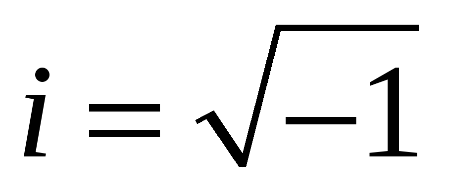
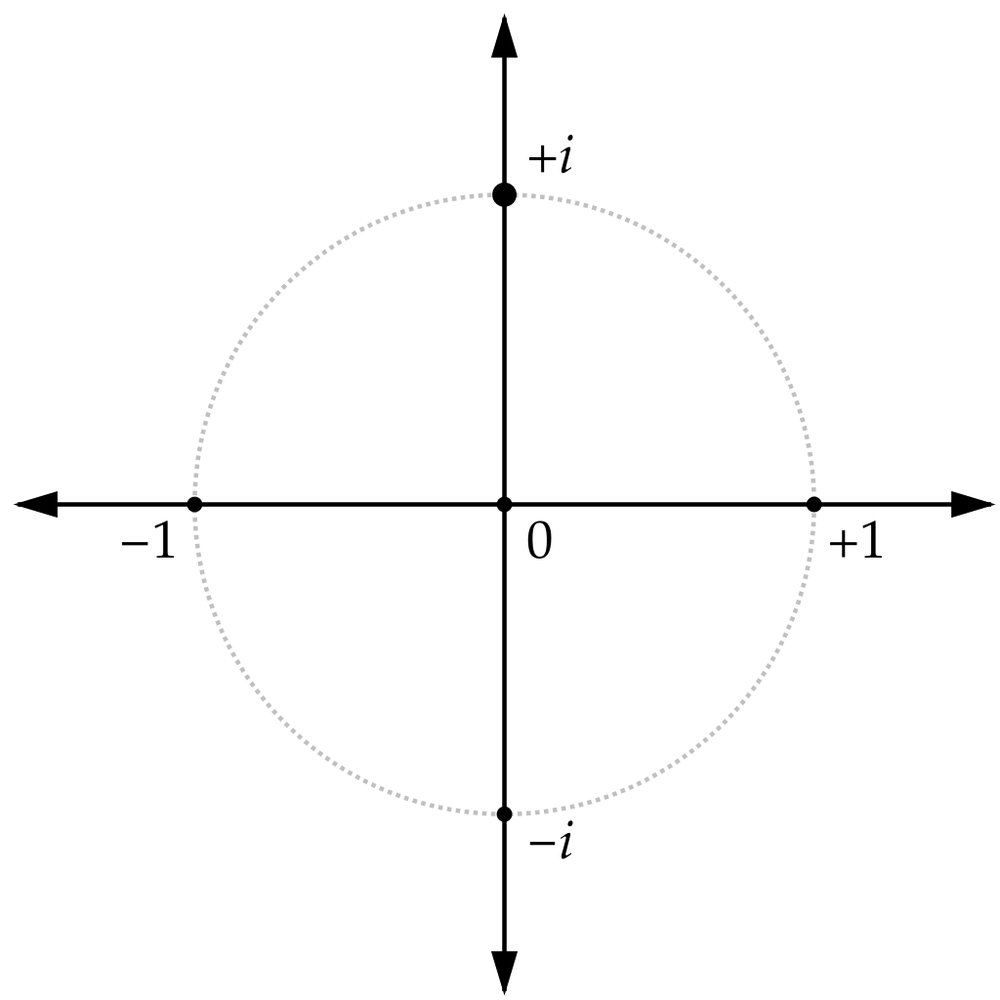
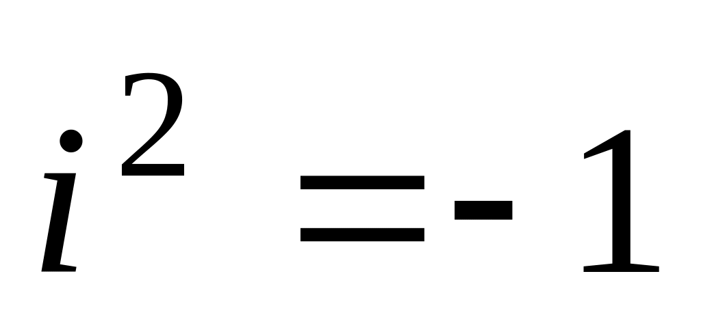
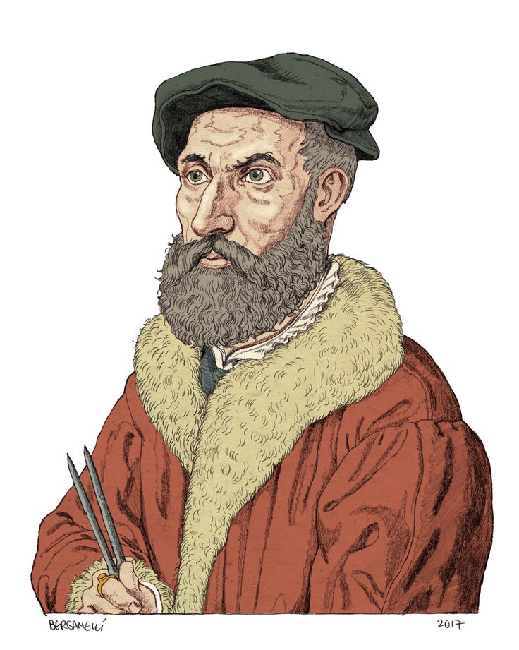
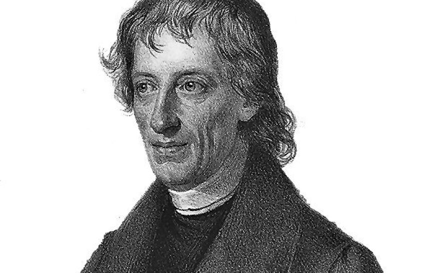
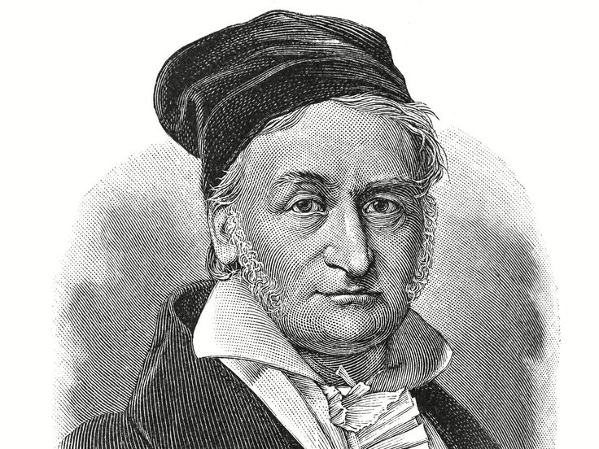

Мнимая единица, обозначаемая буквой ⅈ, является основой комплексных чисел.
В математике комплексное число - это элемент системы счисления, который расширяет
действительные числа с помощью мнимой единицы, которая удовлетворяет уравнению ⅈ2 =
-1.

Каждое комплексное число может быть выражено в виде a + bⅈ,
где a и b - действительные числа. Поскольку ни одно действительное
число не удовлетворяет приведенному выше уравнению, ⅈ Рене Декарт (французский философ, математик и
естествоиспытатель) назвал мнимым числом. Для комплексного числа
a + bⅈ, a - называется действительной частью, а b -
называется мнимой частью.
Набор комплексных чисел обозначается C.
Число ⅈ на комплексной плоскости. Вещественные числа лежат на горизонтальной оси, чисто мнимые — на
вертикальной

Несмотря на историческую номенклатуру, "мнимые" комплексные числа имеют
математическое существование, столь же прочное, как и действительные числа, и они являются фундаментальными
инструментами в научном описании мира природы.
Введение мнимой единицы позволяет расширить поле вещественных чисел до поля комплексных чисел.
Одной из причин введения мнимой единицы является то, что не каждое полиномиальное уравнение с вещественными
коэффициентами имеет решения в поле вещественных чисел.
Также можно упомянуть, что мнимые (комплексные) числа — важнейшая тема курса математики.
Она не только имеет большое значение в современной науке, но и входит в программу обучения большинства
вузов, в том числе и без технической направленности.
Важно понимать, что комплексные числа не являются "воображаемыми" в смысле их отсутствия в реальном мире.
Они представляют собой действительные математические объекты с чёткими правилами операций, которые
находят применение в различных областях науки и техники.

История появления и развития
Комплексные числа впервые были введены в первой половине XVI века итальянским математиком Никколо
Фонтана Тартальей

Никколо Фонтана Тарталья (1499-1557)
(итальянский математик-самоучка, педагог, инженер фортификационных сооружений 15-16 веков).
Он получил выражение для корня кубического уравнения через некоторые параметры, для нахождения которых
составляется система.
Но было выяснено, что такая система не для всех кубических уравнений имела решение в действительных числах.
Это непонятное на то время явление объяснил в 1572 году Рафаэль Бомбелли

Рафаэль Бомбелли (1526-1572)
обосновав её
отличие от положительных и отрицательных чисел.
Он написал книгу под названием «Просто алгебра», где попытался объяснить математику людям
без дипломов,
что, по сути, было введением комплексных чисел и действий над ними.
1545 год: Итальянский математик, механик Герон(Герардо) (занимался
геометрией, механикой, гидростатикой, оптикой.
Автор работ, в которых систематически изложил основные достижения античного мира в области прикладной
механик) впервые использует
мнимые числа в своей работе "Великое искусство, или об алгебраических правилах".
1637 год:Рене Декарт
Рене Декарт (1596-1650)
ввёл термин «мнимое число» в 1637 году в
книге «La Géométrie».
Он официально использовал эти термины и для обозначения «комплексных чисел». Изначально термин
носил уничижительный смысл, поскольку такие числа
считались вымышленными или бесполезными. Однако Декарт сформулировал (хотя и не доказал)
основную теорему алгебры: общее число вещественных и комплексных
корней многочлена равно его степени. Отрицательные корни Декарт по традиции именовал ложными,
однако объединял их с положительными термином
«действительные числа», отделяя от мнимых (комплексных).
Лишь после работ Леонарда Эйлера и Карла Гаусса это понятие получило признание в научном
сообществе.
1777 год: Леонард Эйлер
Леонард Эйлер (1707-1783)
(швейцарский учёный, автор более 850 научных трудов по
математике, механике, физике и даже теории музыки)
начинает использовать букву ⅈ для обозначения мнимой единицы. Для этого он взял первую букву
латинского слова «imaginarius» (мнимый).
19 век: Математики, такие как Карл Фридрих Гаусс

Карл Фридрих Гаусс (1777-1855)
Августин-Луи Коши
Августин-Луи Коши (1789-1857)
развивают теорию комплексных чисел.
Карл Фридрих Гаусс внёс значительный вклад в развитие теории комплексных чисел. Он дал общую
теоретическую трактовку и построил арифметику
комплексных чисел, ввёл ассоциированные числа, разложение на множители, простые комплексные
числа, норму комплексного числа, вычеты по комплексному модулю.
Также Гаусс сформулировал и частично доказал биквадратичный закон взаимности.
Августин-Луи Коши осуществил и упорядочил развитие теории
комплексных чисел, заложив основы общей теории функций комплексной переменной. Благодаря Коши в
математике активно стали использоваться такие понятия,
как модуль комплексного числа и сопряжённые комплексные числа. В 1829–1832 годах учёный создал
теорию вычетов.
Применение в физике, математике и инженерии
Мнимая единица и комплексные числа находят разнообразное применение в различных областях науки и техники:
1. Физика
Мнимая единица в физике используется для решения задач, которые нельзя решить обычными числами:
В электричестве: помогают анализировать переменный ток, делая расчеты проще. В
электротехнике мнимую единицу обозначают буквой j, потому что
i уже используется для обозначения тока.
В электрических цепях: используются для расчета сопротивления. Действительная часть
— это активное сопротивление, а мнимая часть — реактивное.
В волнах: помогают описывать как волны распространяются и затухают. Например,
мнимая часть показывает, насколько быстро звуковая волна ослабевает.
В квантовой механике: волновая функция Шрёдингера часто записывается в комплексной
форме, что позволяет описывать квантовые состояния частиц. Операторы квантовой механики также используют
комплексные числа.
В теории относительности: комплексные числа используются для описания четырехмерного
пространства-времени и преобразований Лоренца.
Мнимая единица расширяет границы нашего понимания сложных систем и процессов в физике, помогая
обозначать различные свойства.
2. Математика
В математике мнимые числа позволяют:
Решать уравнения, не имеющие обычных решений. Например, уравнение x² + 1 = 0 не имеет
решений среди обычных чисел, но имеет решения в комплексных числах: x = i и x = -i.
Формула Эйлера: одна из самых элегантных формул в математике, связывающая
экспоненциальную функцию с тригонометрическими: eix = cos(x) + i·sin(x)
Функции комплексной переменной: открывают новые области математики, включая конформные
отображения, теорию вычетов и аналитическое продолжение.
Фундаментальная теорема алгебры: утверждает, что любой многочлен степени n с
комплексными коэффициентами имеет ровно n корней в поле комплексных чисел (с учетом кратности).
Решение квадратных уравнений с помощью комплексных чисел
В математике мнимые числа позволяют:
Решать уравнения, не имеющие обычных решений. Например, уравнение
не имеет решений среди обычных чисел, но имеет решения в комплексных числах:
и
.
Квадратные уравнения с отрицательным дискриминантом: Когда дискриминант
отрицательный, уравнение
имеет два комплексных корня.
Пример: Решим уравнение
Найдем дискриминант:
Поскольку D < 0, решения будут комплексными:
Ответ:
,
Описывать колебания и циклические процессы: с их помощью можно одновременно
рассчитать и частоту, и фазу сигнала.
Дифференциальные уравнения с комплексными корнями: Дифференциальные уравнения
описывают, как система меняется со временем. Когда у них есть комплексные корни, это часто указывает
на колебательный процесс.
Это уравнение описывает затухающие колебания, и его характеристическое уравнение
имеет комплексные корни.
Найдем корни характеристического уравнения:
Таким образом,
и
Решение дифференциального уравнения будет иметь вид:
Где и — произвольные постоянные. Это затухающее колебание с частотой 1 и коэффициентом
затухания 2.
Обратите внимание, что комплексные корни квадратного уравнения всегда появляются парами в виде
комплексно сопряженных чисел: если является корнем, то и также будет корнем.
Преобразование Фурье и комплексные числа
Преобразование Фурье — один из самых мощных математических инструментов, неразрывно связанный с
комплексными числами. Оно позволяет разложить любую функцию или сигнал на сумму синусоид различных
частот.
Комплексные числа делают преобразование Фурье элегантным и мощным благодаря формуле Эйлера:
Математическое определение
Для функции f(t), преобразование Фурье F(ω) определяется формулой:
А обратное преобразование Фурье:
Разложение сигнала на частотные компоненты с помощью преобразования Фурье
Примеры применения
Обработка сигналов: Выделение полезного сигнала из шума, фильтрация, сжатие данных.
Обработка изображений: Форматы сжатия типа JPEG используют дискретное косинусное
преобразование (вариант преобразования Фурье).
Квантовая механика: Соотношение между координатным и импульсным представлениями
волновой функции.
Спектральный анализ: Определение частотных компонент звука, света или любых других
волновых процессов.
Прямоугольный импульс во временной области (слева) и его спектр в частотной
области (справа)
Дискретное преобразование Фурье (ДПФ)
В практических приложениях часто используется дискретное преобразование Фурье для оцифрованных сигналов:
Где N — количество отсчетов сигнала, n — индекс во временной области, k — индекс в частотной области.
Быстрое преобразование Фурье (БПФ) — эффективный алгоритм вычисления ДПФ, снижающий вычислительную
сложность с O(N²) до O(N log N).
Именно использование комплексных чисел в преобразовании Фурье делает его универсальным инструментом
во многих областях науки и техники — от обработки звука на вашем смартфоне до компьютерной
томографии в медицине.
3. Инженерия и прикладные науки
Комплексные числа широко используются в различных инженерных областях:
Обработка сигналов: анализ временных рядов, фильтрация шумов, частотный анализ и
обработка изображений.
Теория управления: передаточные функции и анализ устойчивости систем.
Электротехника: анализ цепей переменного тока, импеданс и проектирование фильтров.
Аэродинамика: описание воздушных потоков вокруг объектов сложной формы.
Компьютерная графика: эффективная реализация вращений и преобразований в
3D-пространстве.
Преобразование Фурье, одно из наиболее важных математических инструментов в инженерии, использует
комплексные числа для разложения сигналов на синусоидальные компоненты. Это позволяет анализировать
частотные характеристики сигналов, что крайне важно для обработки звука, изображений и во многих других
приложениях.
4. Информационные технологии
В современных IT-системах комплексные числа применяются в:
Алгоритмах сжатия данных: JPEG, MP3 и другие форматы используют преобразование Фурье на
основе комплексных чисел.
Криптографии: некоторые современные алгоритмы шифрования основаны на свойствах
комплексных чисел.
Искусственном интеллекте: комплексные нейронные сети могут иметь преимущества в
определенных задачах обработки сигналов.
Квантовых вычислениях: состояния кубитов описываются с помощью комплексных чисел.
Заключение
Мнимая единица и комплексные числа — это не просто математические абстракции, а мощные инструменты, которые
позволяют решать реальные задачи в физике, инженерии и информационных технологиях. Несмотря на свое
исторически "мнимое" название, комплексные числа имеют вполне реальное применение:
Они расширяют наше понимание математических структур, предоставляя универсальное поле для решения
алгебраических уравнений.
Позволяют более элегантно описывать физические явления, от электромагнитных волн до квантовых состояний.
Лежат в основе множества современных технологий — от сотовой связи до компьютерной томографии.
Упрощают сложные вычисления в инженерных и научных задачах.
История развития концепции комплексных чисел показывает, как математические идеи, изначально встреченные со
скептицизмом, могут стать фундаментальными инструментами научного и технического прогресса. От "мнимых"
решений кубических уравнений в XVI веке до квантовых вычислений XXI века — комплексные числа продолжают
играть центральную роль в нашем понимании мира.
Формула Эйлера eiπ + 1 = 0, связывающая пять фундаментальных математических констант (0, 1, e,
π, i), часто называется "самой красивой формулой в математике" и является ярким примером элегантности и
мощи комплексных чисел.
Изучение комплексных чисел не только расширяет математический кругозор, но и развивает абстрактное мышление,
позволяя видеть скрытые связи между различными областями знаний. Понимание концепции комплексных чисел
открывает двери к более глубокому пониманию многих других математических и физических теорий.